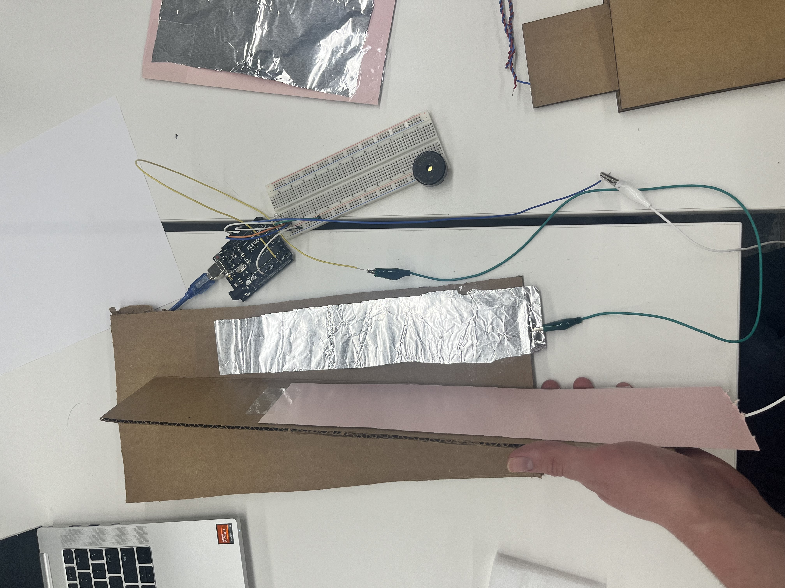
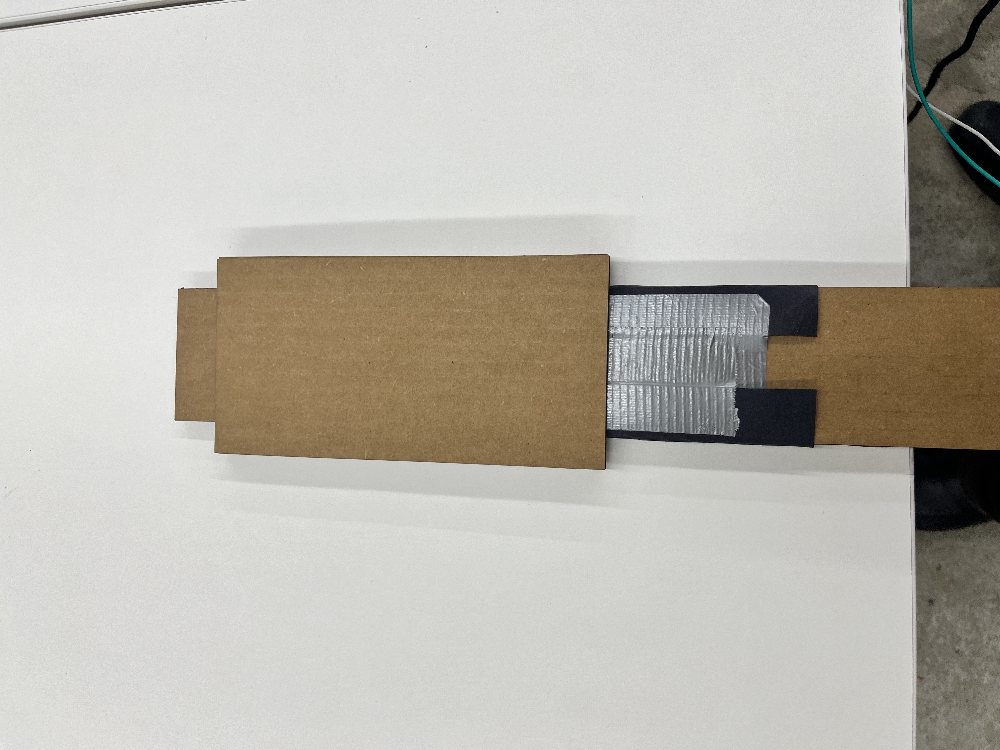

Welcome to my PS70 portfolio! I hope you enjoy learning more about my project for PS70: Intro to Digital Fabrication.
07 : Electronic Output Devices
This week, I made a lot of progress with parts of my project that I feared would be most difficult. In particular, I focused on finding a working capacitive mechanism for providing a continuous frequency signal, and learning how to map such a signal into RGB such that the colors loop every octave. Navigate to each of these areas below:
Capacitive Slide
Last week, I was really struggling to figure out how the theremin produced its stable oscillating waves. I had built some capacitive antennae that I hoped would work for the sensors, but they proved to be far too finnicky for practical use:

I spent a lot of this week trying to figure out better how the theremin works, but I was still lost. There were a lot of resources providing instructions, but I found them all way to vague to figure out.
Starting to fear that I wouldn't be able to get any theremin working, I decided to switch focus for my MVP towards getting any sort of signal from a sensor that you could 'play'. If all else fails, I can use this as the mechanism for my project instead of a real theremin.
After reading about how calipers basically work by precisely measuring changing capacitance as plates slide apart (though they're more complicated than what I'm doing), I thought it might be possible to read from two moving capacitors a slide-whistle signal. I quickly created a first mock-up, and was pleasantly surprised with the results!

I was able to consistently achieve continuous slides across pitches, rather than the jolty capacitance from last week. To calculate a signal, I used the following code:
long result_1; //variable for the result of the tx_rx measurement.
long result_2;
float result;
int analog_pin_1 = A3;
int tx_pin_1 = 4;
int tx_pin_2 = 7;
int lightPin = 3;
int analog_pin_2 = A1;
int signal_1;
int signal_2;
int pitch_min = 130;
int pitch_max = 1050;
int max_1 = 0;
int min_1 = 100000;
int max_2 = 0;
int min_2 = 100000;
int get_rgb(float pitch) {
}
void setup() {
pinMode(tx_pin_1, OUTPUT); //Pin 4 provides the voltage step
pinMode(tx_pin_2, OUTPUT);
Serial.begin(9600);
}
void loop() {
result_1 = tx_rx(tx_pin_1, analog_pin_1);
if (result_1 > max_1){
max_1 = result_1;
} else if (result_1 < min_1) {
min_1 = result_1;
}
result_2 = tx_rx(tx_pin_2, analog_pin_2);
if (result_2 > max_2){
max_2 = result_2;
} else if (result_2 < min_2) {
min_2 = result_2;
}
signal_1 = map(result_1, min_1, max_1, 0, 255);
signal_2 = map(result_2, min_2, max_2, 0, 255);
// result = float(result_1 + result_2) / 2.0;
// result = float(result_1 - result_2);
// int size = map(result, 0, 100, 0, 255);
// analogWrite(lightPin, size);
Serial.print(signal_1);
Serial.print(" | ");
Serial.println(result_1);
// Serial.println(result);
}
long tx_rx(int tx_pin, int analog_pin){ // Function to execute rx_tx algorithm and return a value
// that depends on coupling of two electrodes.
// Value returned is a long integer.
int read_high;
int read_low;
int diff;
long int sum;
int N_samples = 10; // Number of samples to take. Larger number slows it down, but reduces scatter.
sum = 0;
for (int i = 0; i < N_samples; i++){
digitalWrite(tx_pin,HIGH); // Step the voltage high on conductor 1.
read_high = analogRead(analog_pin); // Measure response of conductor 2.
delayMicroseconds(100); // Delay to reach steady state.
digitalWrite(tx_pin,LOW); // Step the voltage to zero on conductor 1.
read_low = analogRead(analog_pin); // Measure response of conductor 2.
diff = read_high - read_low; // desired answer is the difference between high and low.
sum += diff; // Sums up N_samples of these measurements.
}
return sum;
}
Nevertheless, there were a few problems---most notably, changing the pressure pushing the two plates together, or changing where the hand was on the board, would completely change the capacitance. This made it really tough to tune it to correspond in a reasonable way with pitch, because it could be two orders of magnitude higher at one moment than another.
To address this, I tried to create an enclosure that would force the two plates together and shift human input from diagonal onto the plate to just sliding parallel to it. This yielded the following model :



This enclosure worked in that it made the sound more consistent, but I also made the gaps too small, so it was really hard to pull through. It actually ended up breaking on Thursday morning, so it might have to be back to the drawing board.
Mapping Pitch to RGB
My second task was to take the pitch data that I collected with my slider and map it to RGB in such a way that it wraps around every octave.
To do this, I just noted that an octave always corresponds to a power of two times a fundamental pitch, so the logarithm of the period is linear. Using that fact to map the frequencies to a [0,1) interval, I just piecewise defined the color shift around the circle from 0 to 1. This yielded the following code:
#include "math.h"
// float middle_c = log(261.626);
float middle_c = log(8.176);
int r;
int g;
int b;
int rgb;
int rgb_read[] = {0, 0, 0};
int r_read;
int g_read;
int b_read;
float multiplier = 1.05946309436;
long float_map(float x, float in_min, float in_max, float out_min, float out_max)
{
return (x - in_min) * (out_max - out_min) / (in_max - in_min) + out_min;
}
int get_rgb(int pitch, int *rgb) {
float log_pitch = log(double(pitch)) / middle_c;
int nearest_int = int(log_pitch);
log_pitch = (log_pitch - nearest_int) * 6;
// Serial.print(log_pitch);
// log_pitch = fmod(log_pitch, middle_c) / middle_c * 6;
Serial.println(log_pitch);
// Serial.print(nearest_int);
if (log_pitch < 1) {
r = 255;
g = int(float_map(log_pitch, 0, 1, 0, 255));
b = 0;
} else if (log_pitch < 2) {
r = int(float_map(log_pitch, 1, 2, 255, 0));
g = 255;
b - 0;
} else if (log_pitch < 3) {
r = 0;
g = 255;
b = int(float_map(log_pitch, 2, 3, 0, 255));
} else if (log_pitch < 4) {
r = 0;
g = int(float_map(log_pitch, 3, 4, 255, 0));
b = 255;
} else if (log_pitch < 5) {
r = int(float_map(log_pitch, 4, 5, 0, 255));
g = 0;
b = 255;
} else {
r = 255;
g = 0;
b = int(float_map(log_pitch, 5, 6, 255, 0));
}
rgb[0] = r;
rgb[1] = g;
rgb[2] = b;
// return rgb;
}
int r_pin = 10;
int g_pin = 9;
int b_pin = 11;
int speakerPin = 5;
int pitch = 523.251;
void setup() {
// put your setup code here, to run once:
Serial.begin(9600);
}
void loop() {
// put your main code here, to run repeatedly:
get_rgb(pitch, rgb_read);
// r_read = rgb_read / 1000000;
// g_read = (rgb_read % 1000000) / 1000;
// b_read = (rgb_read / 1000);
// Serial.print(rgb_read[0]);
// Serial.print(" | ");
// Serial.print(rgb_read[1]);
// Serial.print(" | ");
// Serial.println(rgb_read[2]);
analogWrite(r_pin, rgb_read[0]);
analogWrite(g_pin, rgb_read[1]);
analogWrite(b_pin, rgb_read[2]);
tone(speakerPin, pitch);
// Serial.print(r_read);
// Serial.print(" | ");
// Serial.print(g_read);
// Serial.print(" | ");
// Serial.println(b_read);
pitch *= multiplier;
if (pitch > 1046.502) {
multiplier = 0.943874312682;
}
if (pitch < 130.813) {
multiplier = 1.05946309436;
}
delay(200);
}
The result was pretty cool! We see that the lights do indeed oscillate between all the colors:
Overall, I think I gained a lot of insight about what does and doesn't work for these theremin-like projects! I'm thinking it might be good to 3D print a more rigid part for the capacitive sensor, so that we can both maintain a strict distance between the plates without making it too tight.